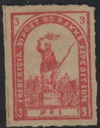
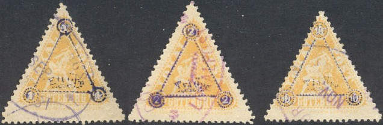
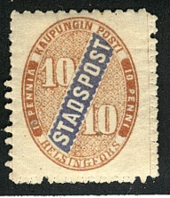
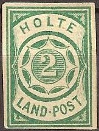
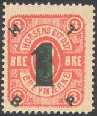
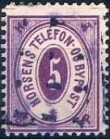
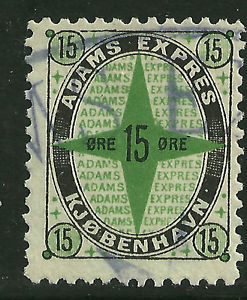
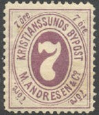

(Reduced size)
Return To Catalogue - Bypost overview
Note: on my website many of the
pictures can not be seen! They are of course present in the
catalogue;
contact me if you want to purchase the catalogue.
NOTE: not all the bypost stamps are yet catalogued by me. If anybody posesses pictures of bypost stamps that are not yet in my catalogue; please contact me!
Issued stamps from 1888 to 1890.

(Reduced size)
I have also seen a 5 o brown and 6 o lilac.
Different design:

I have seen a similar stamp 5 o red perforated, with again a slighly different design (text written in ellipse):
(issued 1888)
(10 o brown on green, surcharged with violet '2')
1 o blue 2 o green 3 o red
1888-1890 Goteborg Privata Lokalpost
Besides the 3 o blue and 5 o blue shown above, I have also seen a yellow stamp in this triangular design with stars in the three corners instead of the value.
(Reduced size, image obtained thanks to Lasse Hult)
This stamps exists with several surcharges, examples:


(Image obtained with permission from Dr. Reinhard Meyer's
website)
1 o orange 2 o green 5 o red 7 o brown 10 o lilac
These stamps were merely issued for stamp collectors. Stamps which are cancelled to order exist in great quantities. More information can be found on the website of Dr. Reinhard Meyer: http://www.nordische-staaten.de/laender/Norwegen/Bypost/bypost.html (in German).

2 o grey 4 o red 8 o blue 10 o brown Surcharged

'2' (red) on 10 o brown '4' (red) on 8 o blue (exists with inverted overprint or inverted '4')
Postmarks: "HAMMERFEST * BYPOST *" in a circle or in a double circle. No date was indicated. It seems that the government cancels (2 rings) also were used occasionally ('HAMMERFEST', date in the center and star below). By the way, cancelled stamps are very rare, most cancelled stamps are cancelled to order. More information can be found on: http://www.nordische-staaten.de/laender/Norwegen/Bypost/bypost.html (in German).

(reduced sizes)
For local issues of Helsingfors and Tammerfors click here.

2 o gold on blue (proof) 3 o black on green 3 o black on blue 3 o black on yellow 3 o red on yellow 5 o gold on yellow 5 o black on green 5 o black on blue 5 o black on yellow 5 o black 10 o red on blue (exists with '10' inverted) 10 o black on green 10 o black on blue 10 o black on yellow 10 o black 10 o red on yellow
Postcards (Inscription 'Brev-Kort' or 'Konvolutter for HOLMESTRANDS BYPOST') with a similar impression exist: 3 o blue and 5 o red.
Some kind of reprint sheetlet?
3 o red 4 o blue 10 o green
Imperforate stamps were not issued regularly.
Cancels: A cicular postmark with inscription 'HOLMESTRAND BYPOST' in violet. More info can be found on: http://www.nordische-staaten.de/laender/Norwegen/Bypost/bypost.html (in German).
Issued stamps from 1870 to 1873.
(Reduced size)
The above stamp with design '2B' in the center (colour of the stamp brown) was issued in 1870.
(Reduced size)


Are these the original proofs?
Issued stamps from 1883 to 1889.
(Reduced size)
3 o red
The cancels on this stamp that I have seen are:
1) Oval with 'Horsens Bypost'
2) 'Horsens Telefon og Bypost' in four lines (at least two types,
in black or violet)
I have seen this stamp (3 o red) surcharged with 'H T B P' in the
corners and a large '1' on the central '3' (stamps of old owner
Bagger taken over by new owner Melgaard, issued 1886). A similar
overprint '3' in an ellipse also exists (issued 1883). I have
also seen a large '5' overprint on this stamp:


"5" on 3 o red (I've seen an inverted surcharge) "10" on 3 o red (I've seen inverted surcharges) "1 HTBP" on 3 o red (1886) "3 HTBP" on 3 o red (1866)

I've been told that this stamp is a forgery, I have no further
information. These forgeries exist with 'FRANCO' cancel in a box
and with '10' overprints.
A rare (provisional?) stamp exists with the elliptic cancel 'Horsens Bypost' in the center and 'EXPRES.' written on top and below (for larger stamps also 'Svar betalt'. Reprints of this stamp exist.


Cancelled with 'Horsens Telefon og Bypost' in violet, another
line cancel exists with only two lines of text.
1 o yellow
1 o orange ('1' different)
2 o green
3 o blue
3 o green
5 o lilac
10 o red
I have seen the 2 o green and 5 o lilac in two types (the '2' and '5' are different). More images can be found on http://www.ringphilmuseum.se/eng_lp_dansk.html.
Surcharged
(Reduced sizes)
'1' on 5 o lilac '1' on 10 o red (at least 4 different types of '1' even se-tenant) '2' on 5 o lilac (1889, at least 3 different types of '2') '2' on 10 o red (three types of overprint) I've even seen two types of overprint se-tenant.
2 o red
5 o blue
Cancels: Hortens Bypost used the government cancels: 'HORTEN' with date, 3 types exist: 'HORTEN' large in one ringcancel, 'HORTEN' smaller in one ringcancel and 'HORTEN' and star in two rings cancel. All 3 types have the date indicated. More info: http://www.nordische-staaten.de/laender/Norwegen/Bypost/bypost.html (in German).
The Kopenhavns Bypost used stamps from 1880 to 1889.


50 c blue, black and gold Surcharged "10" on 50 c blue, black and gold
Cathedral 1 o brown 2 o red 3 o blue 3 o orange 4 o green 5 o brown Surcharged

'2 ORE' and electric arcs (all in red) on 4 o green '2 ORE' and electric arcs on 5 o brown


'Kjobenhavn Bypost' written in an arc 3 o lilac 5 o brown (imperforate, maybe a postal stationery?)


(Reduced size, imperforate)
2 o blue ("KREDS OG TIMETAXT")
3 o lilac ("BUDDE UDLEIES")
10 o green ("BUDDE UDLEIES")
30 o red ("PAKKEPOST")
Surcharged

"5" on 10 o green
2 o blue
20 o red, black and gold 30 o blue, black and gold
Other stamps:


Cancels: the most common cancel on the Kopenhagen stamps is a 3 rings cancel, but other cancels exist.

Cut from an envelope, inscription "Ikke- Expres."

Adams Expres operated from 1888 to 1891.

(Reduced size)
Postal stationery:
(Cut from an envelope?)
(Images obtained thanks to Lasse Hult, reduced sizes)
The Kolding Bypost issued stamps from 1887 to 1889.
The above stamp also exists in brown (imperforate). I have also seen the red stamp imperforate and the green stamp perforated.
I have seen another stamp in a different design with a flying bird, inscription "ACCORDMAERKE": 2 o brown.
Stamps with inscription "GODSFRIMAERKE KOLDING SYDBANER" with an image of a train are railway stamps.

Reprint sheet from 1987.
2 o green 5 o brown 7 o orange 10 o red
Imperforated stamps were not issued, but are proofs (?), examples:
Genuine used stamps of Kragero are very rare. For more information on the stamps of Kragero see: http://www.nordische-staaten.de/laender/Norwegen/Bypost/bypost.html (in German).
For stamps with inscription 'Christanssund' (with a 'C') or 'Chr. Sunds Bypost' see under Christianssund.

(Image obtained with permission from Dr. Reinhard Meyer's
website)

4 o blue (with and without dot behind 'M') 7 o lilac
Postcard in the same design, example:
(Reduced size)
A similar postcard with value 2 o blue exists.

(Image obtained with permission from Dr. Reinhard Meyer's
website)
1 o black and lilac 2 o black and lilac 4 o black and red 5 o black and yellow 7 o black and green 10 o black and lilac
Cancelled stamps of this serie cannot exist, since they were issued after the Bypost has stopped its services.
Postal stationery:
A similar postcard with value 2 o red exists.
For more information see: http://www.nordische-staaten.de/laender/Norwegen/Bypost/bypost.html (in German).

2 o lilac 4 o red 8 o green 10 o orange
These stamps seem to have been issued mainly for stamp collectors. Genuinely used stamps are very rare, many stamps are cancelled to order. More information can be found on http://www.nordische-staaten.de/laender/Norwegen/Bypost/bypost.html (in German).
10 o violet and green 25 o lilac and black 35 o yellow and blue 40 o green and red 50 o brown and blue 75 o blue and grey 1 Kr red and brown Smaller size and partly changed colours
10 o green 25 o blue (see image above) 35 o brown 40 o red 50 o yellow 75 o blue and grey 1 Kr red and brown
(Reduced sizes)

(Reduced size)
1 o red 2 o brown 5 o green 7 o brown 10 o grey
Some essays seem to exist: 10 o blue and 10 o orange (I have never seen these essays). Cancels: a one ring cancel with inscription 'MANDALS BYPOST' with the date in the middle. These stamps seem to have been issued mainly for stamp collectors. Genuinely used stamps are very rare, many stamps are cancelled to order. More information can be found on http://www.nordische-staaten.de/laender/Norwegen/Bypost/bypost.html (in German).


{kind=link}
{kind=link}
{kind=link}
{kind=link}
{kind=link}
{kind=link}
{kind=link}